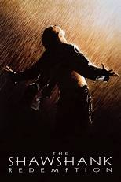
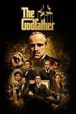
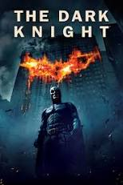

הנה 5 סרטים מומלצים ביותר:

חומות של תקווה
ציון: 9,3 שנה: 1994
דרמה אנושית עוצמתית המבוססת על סיפור של סטיבן קינג.
שנה:1999

הסנדק
ציון: 9,2 שנה: 1972
יצירת המופת הפוליטית והקולנועית של פרנסיס פורד קופולה. . הסרט נחשב לאבות המייסדים של סרטי המאפיה והפשע.

האביר האפל
ציון: 9,0 שנה: 2008
סרט גיבורי-העל האייקוני של כריסטופר נולאן ששינה את פני הז'אנר.
ספרות זולה
ציון: 8,9 שנה: 1994
הסרט המהפכני של קוונטין טרנטינו ששינה את חוקי המשחק הקולנועיים עם דיאלוגים מבריקים, מבנה עלילתי לא-ליניארי ופס-קול בלתי נשכח.
רשימת שינדלר
ציון: 8,8 שנה: 1993
אפוס היסטורי מטלטל בבימויו של סטיבן ספילברג המציג בשחור-לבן את סיפורו האמיתי של אוסקר שינדלר שהציל את חייהם של מעל אלף יהודים במהלך השואה.